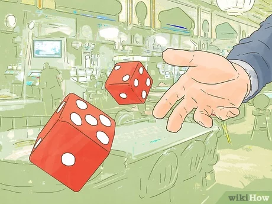

Dice Wager Game
The player starts with 500 points and is prompted to input points to play or -1 to quit. If the player decides to quit, a thank-you message is displayed, and the game ends. If the player decides to continue, the game checks if the input points are valid. Invalid inputs prompt the user to enter a valid number of points. Once the game starts, it enters a loop where the player and computer each roll two dice. The sum of the dice is compared, and the player either wins, loses points, or the game ends if the player runs out of points.
The player is then given the option to play again. The use of nested loops and conditional statements ensures the proper flow of the game, handling input validation, calculating points, and providing a clear game-over message. The game allows for repeated play, resetting points upon restarting and exiting when the player decides to quit. Lines 13-22, carry out the value of the dice rolls. Then the rest of the code, expands on what happens after the values are given. For example the two rolls will be compared and if the user's is smaller, the user will lose points. You can visit the Github respository here